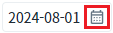
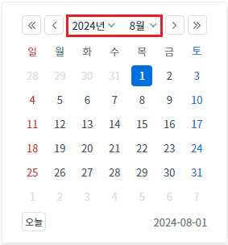
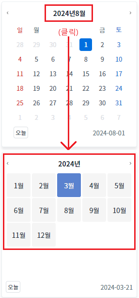
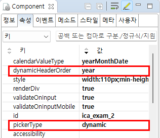
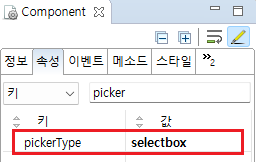

InputCalendar의 'pickerType' 속성을 사용하여, 캘린더의 연도와 월을 선택하는 UI를 설정하는 예제입니다. 이 속성의 설정 값에 따른 동작은 다음과 같습니다.
selectbox: (기본 설정) 연도와 월 선택하는 UI를 drop down 형태로 구성
dynamic: 연도와 월을 선택하는 UI를 list 형태로 구성
(기본 설정) 연도와 월 선택하는 UI를 drop down 형태로 구성
연도와 월을 선택하는 UI를 list 형태로 구성
예제 영역 '(기본 설정) DropDown 형태의 UI'에서 테스트합니다.1
STEP 1: InputCalendar의 캘린더 아이콘을 클릭합니다.
InputCalendar의 캘린더 아이콘을 클릭합니다.
Image 1.브라우저(Chrome) 실행 예시 - 캘린더 아이콘

2
STEP 2: 실행 결과를 확인합니다.
연도와 월을 선택하는 UI가 DropDown 형태로 구성되었음을 확인합니다.
Image 2.브라우저(Chrome) 실행 예시 - 캘린더

예제 영역 'List 형태의 UI'에서 테스트합니다.1
STEP 1: InputCalendar의 캘린더 아이콘을 클릭합니다.
InputCalendar의 캘린더 아이콘을 클릭합니다.
Image 3.브라우저(Chrome) 실행 예시 - 캘린더 아이콘
2
STEP 2: 실행 결과를 확인합니다.
연도와 월을 선택하는 UI가 List 형태로 구성되었음을 확인합니다.
Image 4.브라우저(Chrome) 실행 예시 - 캘린더

1
속성을 설정합니다.
[필수] pickerType="dynamic"
연도와 월을 선택하는 UI을 지정합니다. selectbox없이 연도나 월을 리스트 형태로 선택.
[필수] dynamicHeaderOrder="year"
pickerType="dynamic"인 경우 헤더 부분의 헤더 부분에 label을 year를 먼저 출력.
Image 5.웹스퀘어 스튜디오의 Component View - 속성 설정 예시

Example 1.Source
<!-- inputCalendar 의 소스 본문 예시 --> <w2:inputCalendar pickerType="dynamic" dynamicHeaderOrder="year" calendarValueType="yearMonthDate" id="ica_exam_2"> </w2:inputCalendar>
1
속성을 설정합니다.
[필수] pickerType="selectbox"
연도와 월을 선택하는 UI을 지정합니다. DropDown 형식으로 구성
Image 6.웹스퀘어 스튜디오의 Component View - 속성 설정 예시

Example 2.Source
<!-- inputCalendar 의 소스 본문 예시 --> <w2:inputCalendar pickerType="selectbox" id="ica_exam_1"> </w2:inputCalendar>
pickerType
dynamicHeaderOrder